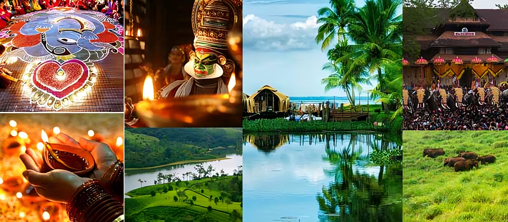

Explore the Beauty of Kerala
Experience the serene backwaters, lush greenery, and vibrant culture of Kerala.
About Kerala
Kerala, known as God's Own Country, is a state on the southwestern Malabar Coast of India. It is renowned for its unique culture, stunning landscapes, and rich history.
History
Kerala has a rich and varied history that dates back to ancient times. It was an important spice trading center and had trade relations with ancient civilizations such as the Romans, Greeks, Arabs, Chinese, and Jews. The state has been influenced by various dynasties and colonial powers, including the Chera dynasty, Portuguese, Dutch, and British.
Achievements
- Kerala has the highest literacy rate in India, a testament to its focus on education and progressive social policies.
- The state has one of the best healthcare systems in the country, with numerous government and private hospitals providing quality medical care.
- Kerala is known for its high Human Development Index (HDI), indicating the overall well-being and quality of life of its residents.
- The state has received numerous awards for its tourism initiatives, promoting responsible and sustainable tourism practices.
- Kerala is a leader in renewable energy initiatives, with significant investments in solar and wind energy projects.
Kerala Culture
Explore the diverse cultural heritage of Kerala, including traditional art forms and festivals. Kerala's culture is a blend of various influences, including ancient Indian traditions, local customs, and external influences from trade and colonial history.
Art Forms
Kerala is famous for its classical art forms like Kathakali, a highly stylized dance-drama known for its elaborate costumes and makeup. Mohiniyattam, another classical dance form, is performed by women and is known for its graceful movements. Theyyam, a ritualistic dance performed in temples, is characterized by vibrant costumes and masks.
Festivals
The state celebrates various festivals with great enthusiasm. Onam, the harvest festival, is marked by floral decorations, traditional feasts, and boat races. Vishu, the Malayalam New Year, is celebrated with the 'Vishu Kani' ritual, which involves arranging auspicious items to bring prosperity for the year ahead. The Thrissur Pooram is one of the largest and most famous temple festivals in Kerala, known for its grand procession of decorated elephants and fireworks.
Cuisine
Kerala's cuisine is renowned for its use of spices and coconut. Traditional dishes include Sadhya, a vegetarian feast served on a banana leaf, and seafood specialties like fish curry and prawn masala. The use of curry leaves, black pepper, and cardamom adds unique flavors to Kerala's dishes.
Crafts
The state is also known for its rich tradition of crafts. Coir products, made from coconut husk, are widely produced. Kerala's handloom textiles, especially those used in traditional garments like the 'Mundu' and 'Sari', are renowned for their quality and craftsmanship.
Top Attractions
|
Experience the tranquil backwaters of Kerala. A network of interconnected canals, rivers, lakes, and lagoons that offers a serene and picturesque environment. |

Relax on the pristine beaches of Kerala. Known for their golden sands and clear waters, popular spots include Kovalam, Varkala, and Alappuzha. |

Explore the scenic hill stations of Kerala, such as Munnar and Wayanad. Famous for their tea plantations, misty hills, and cool climate. |

Discover the wildlife sanctuaries of Kerala, including Periyar and Wayanad. Home to diverse flora and fauna, ideal for nature enthusiasts and wildlife photographers. |
Explore the ancient temples of Kerala, such as Sree Padmanabhaswamy Temple and Guruvayur Temple. Renowned for their architectural beauty and spiritual significance. |
Experience Theyyam, a traditional dance form of Kerala that combines ritual and performance. Known for its vibrant costumes and intricate makeup, Theyyam is performed in temples and cultural festivals. |